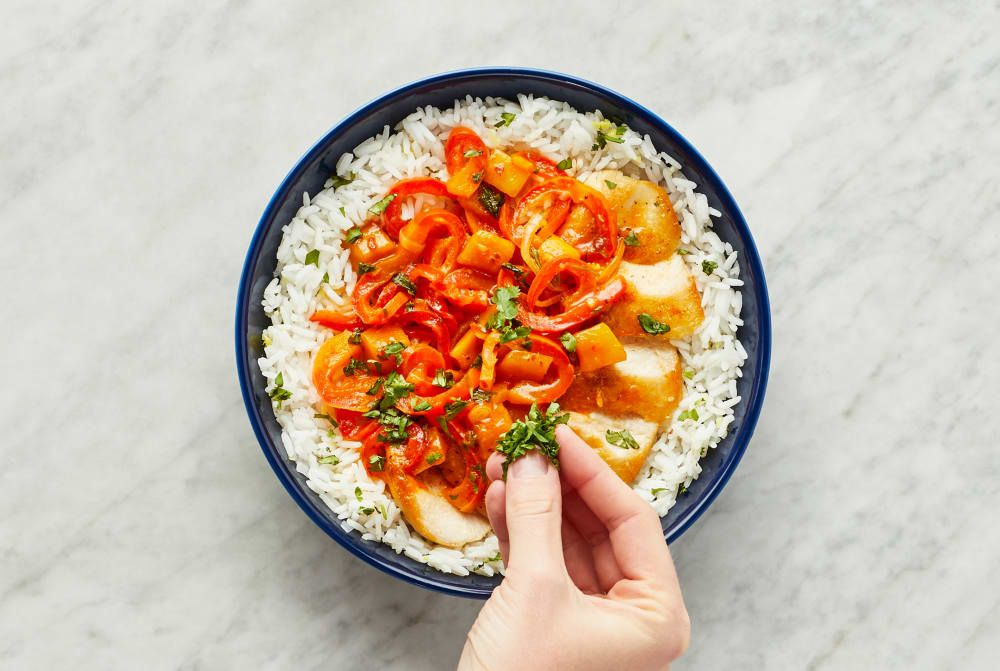

Tangy Tropical Chicken

Sweet and tangy chicken with bell pepper and cilantro over ginger rice
This recipe is not only delicious, it's also quick and easy! The smell of chicken, ginger-infused rice, and sautéed bell pepper will have your neighbors knocking on your door.
The fresh pineapple adds sweet-tart notes to this yummy meal.
Ingredients
- 1 Bell Pepper
- 1 Shallot
- 1 Ginger Thumb
- 1/4 oz Cilantro
- 1 Lime
- 1/2 Cup Jasmine Rice
- 10 oz Chicken Cutlets
- 4 oz Pineapple
- 1 oz Sweet Thai Chili Sauce
- 4 TBSP Vegetable Oil
- 2 TBSP Butter
- Kosher Salt
- Pepper
Steps
- Prep
- Wash and dry all produce.
- Halve, peel, and thinly slice half the shallot; finely chop remaining shallot. Peel and mince or grate ginger. Halve, core, and very thinly slice bell pepper into strips. Zest and quarter lime. Roughly chop cilantro.
- Cook Rice
- Heat a drizzle of oil in a small pot over medium-high heat. Add chopped shallot and half the ginger; cook, stirring, until fragrant, 1 minute.
- Stir in rice, ¾ cup water, and a pinch of salt. Bring to a boil, then cover and reduce heat to low. Cook until rice is tender, 15-18 minutes.
- Keep covered off heat until ready to serve.
- Cook Chicken
- While rice cooks, pat chicken dry with paper towels and season all over with salt and pepper.
- Heat a large drizzle of oil in a large pan over medium-high heat. Add chicken and cook until browned and cooked through, 3-5 minutes per side.
- Turn off heat. Transfer to a cutting board. Cover loosely with foil to keep warm.
- Cook Veggies
- Heat a drizzle of oil in pan used for chicken over medium-high heat. Add bell pepper and cook, stirring occasionally, until slightly tender, 4-5 minutes.
- Add sliced shallot and remaining ginger; cook until softened, 2-3 minutes.
- Make Sauce
- Add pineapple and its juice, chili sauce, and juice from half the lime to pan with veggies. Bring to a simmer and cook until sauce is slightly thickened, 2-3 minutes. TIP: If sauce is too thick, stir in a splash of water.
- Turn off heat; stir in half the cilantro and 1 TBSP butter. Season with salt and pepper.
- Finish & Serve
- Thinly slice chicken crosswise.
- Fluff rice with a fork; stir in lime zest and 1 TBSP butter. Season with salt and pepper.
- Divide rice between bowls; top with sliced chicken and saucy veggies. Sprinkle with remaining cilantro. Serve with remaining lime wedges on the side.